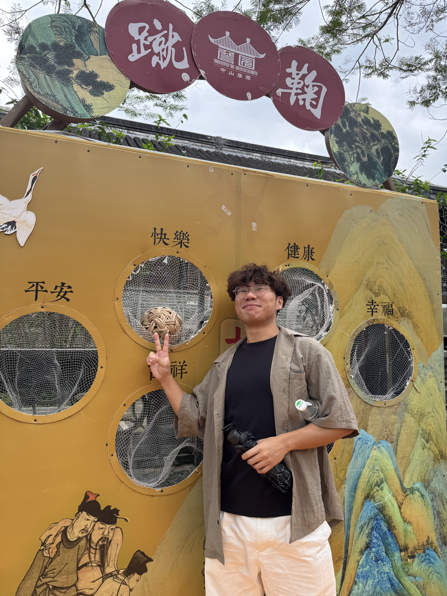

About Me
I am a Translation student from Lingnan University, currently studying in my final year.
You may wonder why I created this blog. Well, it's simple because I love eating and exploring Tuen Mun. Also, as a hostel resident, I get more chance to discover good food around here.

There's also a more personal reason behind this blog.University life doesn't come with a regular schedule. Sometimes I eat out after I finish assignments. Sometimes after I hang out with my friends. Sometimes I'm stressed out that I can't fall asleep. I'll head out and find something to eat no matter what time and the reason is. Like having breakfast at 5 am, lunch at 2 pm, and lots of late-night snack.
As I kept eating, I noticed that Hung Kiu looks different depending on the time of day. Different shops take turns being busy.This blog is my way of capturing these moments.
Why Hung Kiu?
(also known as Tseng Choi Street or Prime View Garden area)
Hung Kiu has been my favourite place over the past few years. It's not far from my university which I can get there for around fifteen-minute walk. There are some nice local stores worth visiting.
Another reason is that dining options near Lingnan have been getting fewer and fewer. The student canteen is not that good to be honest. I only eat there when I am in a hurry like when I have a class in thirty minutes. Lingnan House is better, but eating there every day also gets tiring.
The most comparable option is Fu Tai Shopping Centre. There are Green River Restaurant, Fairwood, Itamomo, Bao Dim Sin Seng, Lime Fish, KFC, McDonald's — all chain restaurants. They get old pretty quickly. In 2024, there was also the "Fu Tai Night Market ", where street vendors set up in the evening. You could find okonomiyaki, Rice Noodle Rolls, cart noodles, fried rice, fried noodles — plenty of variety. But it was shut down by Food and Environmental Hygiene Department. Now most of the shops in the mall close at 11 p.m. Even McDonald's is closed. The only places left are Circle K and a cart noodle stall.
So if you want something more interesting to eat, you have to go a little further to Hung Kiu. The choices are much better there. And if you don't like walking, you can cycle or take a bus to get there too.
How This Blog Works
Every month, I will be introducing one shop in Hung Kiu. This isn't a professional food criticism page. It is just a university student's daily record. This blog is about food, people and the warmth of this street.If you enjoy these kinds of stories, look around the blog.